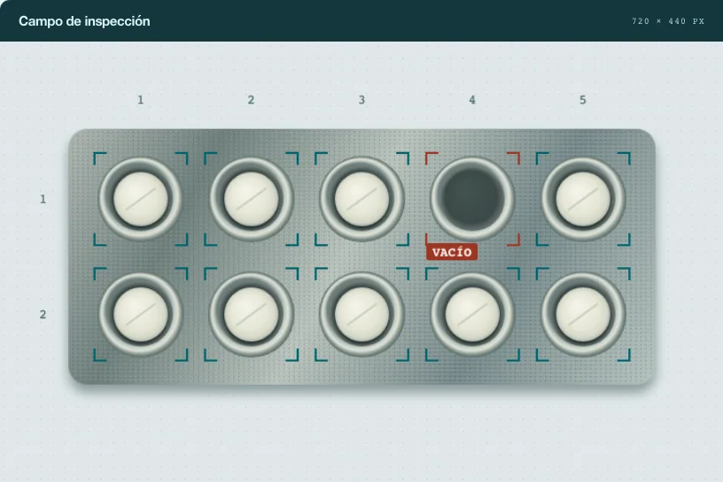

Automatización
Cotizador de refacciones
Convierte una lista de piezas en partidas con precios. Revisa las coincidencias y exporta el borrador.
Ingeniería de software
Desarrollo herramientas de automatización, análisis de datos y visión artificial.

Abre una demo y pruébala con datos de ejemplo.
Automatización
Convierte una lista de piezas en partidas con precios. Revisa las coincidencias y exporta el borrador.
Análisis de datos
Compara perfiles de futbolistas y explora cómo cambia su similitud al cambiar la métrica de distancia.
Comercio B2B
Elige cuántas botellas pedir y genera una solicitud de muestra con las reglas de volumen del proyecto Meraki B2B.
Sep 2024 — Sep 2025
Desarrollé sistemas de inspección visual con Python, YOLOv8 y OpenCV para detectar tabletas faltantes o dañadas. Colaboré en la clasificación de microcables con Raspberry Pi.
Feb — Jun 2026
Implementé vistas en React y TypeScript y conecté componentes de la interfaz con una API REST.
2023 — 2025
Desarrollamos una aplicación con React, Node.js y PostgreSQL para registrar accesos y consultar métricas. Primer lugar en Expo Ingeniería 2023.
Egreso previsto
Dic 2026
Experiencia académica internacional en Japón y Austria.
Contacto profesional
Cuéntame qué tarea te quita tiempo y cómo la resuelves hoy.